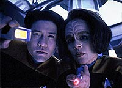
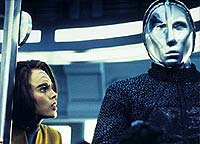
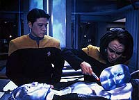
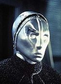
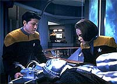

|
MANCHETE
DO EPISDIO
Histria com baixo valor de produo e
m caracterizao tem tom moralista
Episdio
anterior | Prximo
episdio
Sinopse:
Data Estelar: desconhecida.
Aps a tripulao transportar um rob desativado a bordo, B'Elanna
Torres trabalha noite e dia para religar o misterioso ser mecnico.
Aps vrias tentativas, a engenheiro-chefe finalmenet encontra um
fonte de fora apropriada fica encantada ao reativar a forma de
vida artificial.
 O
rob se apresenta como Unidade Automtica 3947, um de uma quase
extinta linha de trabalhadores criada pelos Pralor, uma espcie
humanide que no existe mais. Ele pede que Torres construa o prottipo
de um mdulo de energia para a criao de unidades adicionais,
mas Janeway aponta que esta seria uma violao da Primeira
Diretriz.
A unidade no iria aceitar "no" como resposta. Antes de
ser devolvida a sua nave, ela deixa Torres inconsciente e a
sequestra, levando-a ao veculo Pralor, onde outros robs os
esperam.
Para a insatisfao de Janeway, a tripulao incapaz de
penetrar um escudo de defesa subespacial que envolve a nave Pralor,
e o comunicador de Torres desativado pelos robs. Quando a
Voyager dispara na nave aliengena, os robs respondem com um
violento ataque que ameaa destruir a nave da Federao. Para
interromper a agresso, Torres concorda em construir o prottipo.
Enquanto a tripulao da Voyager planeja um resgate, Torres
descobre que os robs so incapazes de produzir seu prprio prottipo
porque cada mdulo tem um cdigo individual de enrgia. Ela cria um
mdulo padro, capaz de funcionar com qualquer unidade.
Outra nave se aproxima, tripulada por robs parecidos. Ela comea
a atacar a nave onde est Torres, e a engenheira descobre que os
construtores desses robs, os Cravics, usaram as mquinas para
lutar sua guerra contra os construtores Pralor.
 Todos
os robs guerreiros foram programados para vencer, e quando os
humanides Pralor e Cravic decidiram por uma trgua, os robs os
destruram e continuaram sua batalha. O novo prottipo que Torres
havia criado permitiria aos robs Pralor vencer a guerra contra
seus inimigos. Horrorizada, Torres destri o prottipo, e a
tripulao consegue transport-la da nave Pralor, deixando os robs
continuarem sua guerra.
Comentrios:
A apologia
Primeira Diretriz chega com fora total em "Prototype".
Janeway nem parece a mesma capit que na semana anterior estava
negociando armas e provises com rebeldes em um planeta aliengena.
Desta vez, ela volta sua inflexvel defesa da regra mxima da
Frota Estelar.
E o mais engraado que o comeo do episdio nos faz pensar que
ela est sendo radical demais em negar aos robs a chance de
procriar. Comeamos torcendo para que ela deixe de bobeira, e nos
alinhamos posio adotada por B'Elanna. Graas a isso, podemos
tambm sentir o horror da engenheira quando ela descobre que coisa
terrvel ela havia feito ao criar o prottipo.
 Portanto,
bem ou mal, o roteiro foi muito esperto: queria passar uma mensagem
moral, defendendo a razo absoluta da Primeira Diretriz, e
conseguiu, transmitindo isso em forma de lgica e sensao para a
audincia. Pena que algumas coisas tenham sido sacrificadas no
caminho.
Para comear, no d para entender a obsesso de Torres para
colocar o rob em funcionamento. Faltou algum elemento que
justificasse esse comportamento. Pode parecer um problema bobo, mas
ele serve como parmetro para que entendamos um dos maiores
problemas de Voyager: a caracterizao dos personagens.
No caso, a obsesso de B'Elanna no faz parte de seu rol bsico
de caractersticas. Ela foi introduzida sem mais nem menos pelos
roteiristas s para dar andamento histria. O problema
especialmente lamentavel por poder ser facilmente corrigido, com uma
ou duas frases de dilogo.
Em vez disso, o roteiro negligencia completamente os conflitos
enfrentados por B'Elanna no decorrer do seriado. Parece que suas
tendncias Klingons foram colocadas de lado e a tenente vira
"material da Frota" de um episdio para o outro.
 O que vemos aqui,
assim como em futuros episdios da temporada, um lado mais tranqilo
de Torres, o que um grande desperdio de tempo e histrias. Por
exemplo, o modo como ela encara os protocolos da Voyager desde "Prime
Factors" a nivela a qualquer outro tripulante que
passou pela Academia. Ela preferiria morrer a decepcionar Janeway
novamente. Da surge uma contradio, pois a personagem to
orgulhosa por ser Maquis quanto oficial da Frota.
Alm disso, o episdio no quis se apropriar apenas do moralismo
da Srie Clssica, com suas tpicas "mensagens da
semana". Optou tambm por rechear a histria com alguns
elementos de produes baratas, como a da srie original. Em
destaque, os robs, um dos piores trabalhos de maquiagem da histria
do franchise --principalmente porque poderia ter sido bem melhor.
Em termos de estrutura narrativa, o diretor Jonathan Frakes faz bom
uso de alguns recursos, como a viso em primeira pessoa do rob e
algumas tomadas mais agitadas, mas nada que seja verdadeiramente
revolucionrio. O feijo com arroz habitual.
 No
final das contas, trata-se de um episdio mediano. S no bom
pelos j mencionados baixos valores de produo e a falta de
cuidado na caracterizao dos personagens. O tema bom, e
trata-se de uma interessante pea de fico cientfica. Pena que
seja uma tecla que j foi to batida em Jornada nas Estrelas,
e outrora com toques mais qualificados.
Citaes:
3947 - "It would be
inadvisable for your captain to provoke us."
("Seria desaconselhvel para sua capit nos provocar.")
Janeway - "Who are we to swoop in, play God, then continue
on our way without the slightest consideration of the long-term
effects of our actions?"
("Quem somos ns para chegar, brincar de Deus, ento
continuar nosso caminho sem a menor considerao sobre os efeitos
de longo prazo de nossas aes?")
B'Elanna - "39... do you mind if I call you '39?'"
("39... voc se importaria se eu te chamasse de '39'?")
3947 - "I am 3947."
("Eu sou 3947.")
Doutor - "I'm a doctor, not an engineer."
("Eu sou um mdico, no um engenheiro")
Chakotay - "You don't mind if the rest of us give you a
little help, do you Paris? I'd hate to lose another shuttle."
("Voc no se importa se ns dermos uma mozinha, no
Paris? Eu odiaria perder outra nave auxiliar.")
Trivia:
 Jonathan Frakes (William Riker) dirigiu o episdio. Em entrevista,
ele reclamou do baixo custo da produo, que resultou num visual
bobo dos robs em que a histria se centrava.
Jonathan Frakes (William Riker) dirigiu o episdio. Em entrevista,
ele reclamou do baixo custo da produo, que resultou num visual
bobo dos robs em que a histria se centrava.
Ficha
tcnica:
Escrito por Nicholas Corea
Direo de Jonathan Frakes
Exibido em 15/01/1996
Produo: 029
Elenco:
Kate Mulgrew como
Kathryn Janeway
Robert Beltran como Chakotay
Roxann Biggs-Dawson como B'Elanna Torres
Robert Duncan McNeill como Tom Paris
Jennifer Lien como Kes
Ethan Phillips como Neelix
Robert Picardo como Doutor
Tim Russ como Tuvok
Garrett Wang como Harry Kim
Elenco convidado:
Rick Worthy como 3947
Hugh Hodgin como 6263
Episdio
anterior | Prximo
episdio
|